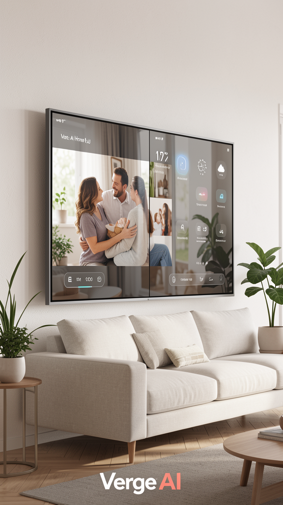
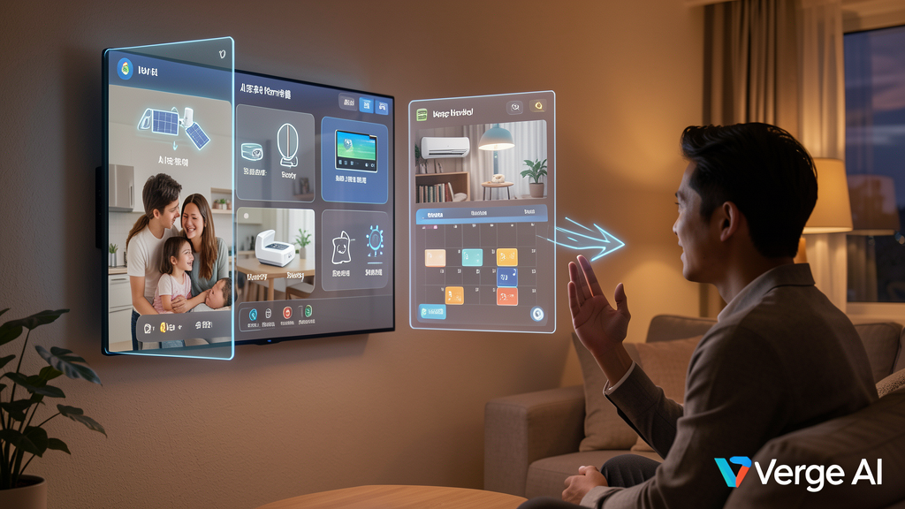
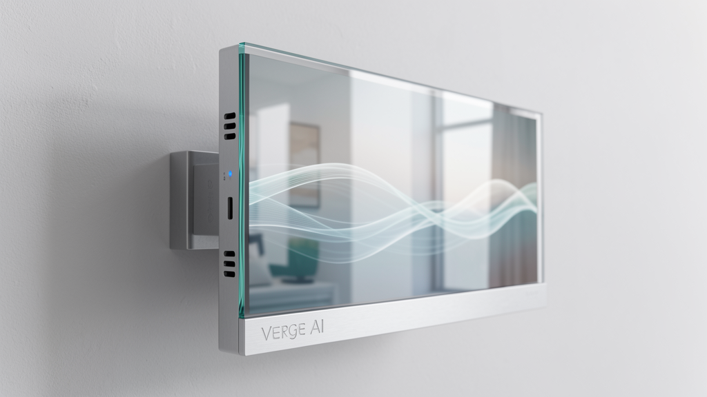
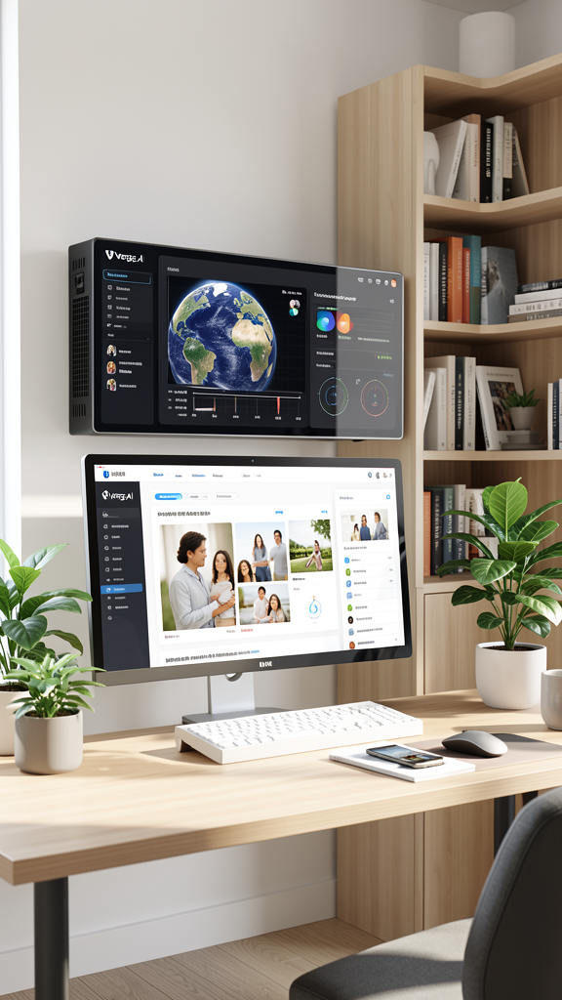

Mockup: Transparent Display
Mockup: Smart Home Control
Mockup: Side Profile
Mockup: NAS AdminWalk past the Hub — presence sensor activates the transparent display: weather + time + schedule (top-left), satellite device status (top-right), family photo slideshow (center), smart home quick controls (bottom). Zero-touch ambient information.走过中控台 — 存在感应器激活透明显示屏：天气+时间+日程（左上），卫星设备状态（右上），家庭照片轮播（中央），智能家居快速控制（底部）。零触控环境信息。走過中控台 — 存在感應器激活透明顯示屏：天氣+時間+日程（左上），衛星設備狀態（右上），家庭照片輪播（中央），智能家居快速控制（底部）。零觸控環境資訊。
The Kitchen Agent detects eggs expiring tomorrow. The Hub cross-references and speaks: "I've added eggs to your shopping list and synced it to your phone and the Kitchen Agent." Unified ecosystem control.厨房助手检测到鸡蛋明天过期。中控台交叉核对并语音提示："我已将鸡蛋加入您的购物清单，并同步到您的手机和厨房助手。" 统一生态系统控制。廚房助手檢測到雞蛋明天過期。中控台交叉核對並語音提示："我已將雞蛋加入您的購物清單，並同步到您的手機和廚房助手。" 統一生態系統控制。
All satellite devices store encrypted data on the Hub's NVMe SSD. Ask "What did I eat last Thursday?" — the Hub recalls nutrition logs from the Kitchen Agent and skin analysis from the Smart Mirror, delivering a unified answer.所有卫星设备将加密数据存储在中控台的NVMe SSD上。询问"上周四我吃了什么？" — 中控台从厨房助手调取营养记录，从智能镜子调取皮肤分析数据，给出统一答案。所有衛星設備將加密數據存儲在中控台的NVMe SSD上。詢問"上週四我吃了什麼？" — 中控台從廚房助手調取營養記錄，從智能鏡子調取皮膚分析數據，給出統一答案。
When no one is active, the transparent display transforms into a digital art frame showing family photos or gentle animated scenes. At night, it dims to a subtle ambient clock at just 5W power. Always beautiful, never intrusive.无人活动时，透明显示屏变身为数字艺术画框，展示家庭照片或柔和动画场景。夜间，它暗淡为微妙的氛围时钟，仅耗电5W。永远美丽，绝不打扰。無人活動時，透明顯示屏變身為數字藝術畫框，展示家庭照片或柔和動畫場景。夜間，它暗淡為微妙的氛圍時鐘，僅耗電5W。永遠美麗，絕不打擾。
RK3588 with 6 TOPS NPU runs Qwen3-2B/4B W8A8 locally. All satellite devices offload heavy inference here — enabling thin, low-cost terminals across the home.RK3588搭配6 TOPS NPU本地运行Qwen3-2B/4B W8A8。所有卫星设备将繁重推理卸载至此 — 实现家中轻量低成本终端。RK3588搭配6 TOPS NPU本地運行Qwen3-2B/4B W8A8。所有衛星設備將繁重推理卸載至此 — 實現家中輕量低成本終端。
NVMe SSD with AES-256 + TPM hardware encryption. All satellite data — nutrition logs, beauty trends, learning progress, pet health — stored privately, never in the cloud.NVMe SSD搭配AES-256 + TPM硬件加密。所有卫星数据 — 营养记录、美容趋势、学习进度、宠物健康 — 私密存储，绝不上云。NVMe SSD搭配AES-256 + TPM硬件加密。所有衛星數據 — 營養記錄、美容趨勢、學習進度、寵物健康 — 私密存儲，絕不上雲。
15"–21" dual-sided transparent screen. Visible from both sides. When active: smart home dashboard. When idle: family photo gallery. Gallery-grade design that disappears into your wall.15–21英寸双面透明屏幕。两面可见。激活时：智能家居仪表盘。空闲时：家庭照片画廊。画廊级设计，融入您的墙面。15–21英寸雙面透明屏幕。兩面可見。激活時：智能家居儀表盤。空閒時：家庭照片畫廊。畫廊級設計，融入您的牆面。
WiFi 6 + BLE 5.3 + Thread + Matter compatibility. New satellite devices pair automatically via BLE scan. OTA updates distributed to all satellites from the Hub (delta updates, scheduled 3AM).WiFi 6 + BLE 5.3 + Thread + Matter兼容。新卫星设备通过BLE扫描自动配对。OTA更新从中控台分发至所有卫星（增量更新，凌晨3点调度）。WiFi 6 + BLE 5.3 + Thread + Matter兼容。新衛星設備通過BLE掃描自動配對。OTA更新從中控台分發至所有衛星（增量更新，凌晨3點調度）。
| Display显示屏顯示屏 | Transparent holographic 15"–21", dual-sided visible |
| Mounting安装方式安裝方式 | Wall-mount (primary) / desktop stand |
| Dimensions尺寸尺寸 | ~380×280×25mm |
| Weight重量重量 | ~2–3.5kg |
| Storage存储儲存 | NVMe SSD 512GB–2TB (AES-256 + TPM encrypted) |
| Memory内存內存 | 8–16GB RAM |
| AI SoCAI SoCAI SoC | RK3588 (6 TOPS NPU) + ESP32-C6 (connectivity co-processor) |
| SLM InferenceSLM推理SLM推理 | Qwen3-2B/4B W8A8 @ NPU (11.5/5.7 t/s) — RKLLM v1.2.3 / llama.cpp |
| Speech (ASR)语音(ASR)語音(ASR) | SenseVoice Small @ NPU (~150ms) — Cantonese + Mandarin |
| Speech (TTS)语音(TTS)語音(TTS) | CosyVoice @ CPU (~300ms) — emotional voice synthesis |
| Connectivity连接連接 | WiFi 6 + Gigabit Ethernet + BLE 5.3 + Thread |
| Smart Home智能家居智能家居 | Matter / HomeKit compatible |
| Satellite Protocol卫星协议衛星協議 | WebSocket Agent Protocol (LAN) — all satellite devices |
| Database数据库數據庫 | SQLite / LiteFS (multi-device sync) |
| Cooling散热散熱 | Fanless passive cooling — completely silent |
| Power电源電源 | Idle 5W / Peak 35W |
| Design设计設計 | Minimalist aluminum frame, concealed antenna, hidden side vents |
| Cloud Fallback云端后备雲端後備 | DeepSeek V4-Flash / Qwen3.6-Plus (complex tasks, optional) |
Heavy inference centralized, terminals thinned. Every satellite becomes affordable when the Hub does the thinking.重型推理集中化，终端轻薄化。当中控台负责思考，每个卫星都能变得经济实惠。重型推理集中化，終端輕薄化。當中控台負責思考，每個衛星都能變得經濟實惠。
All core features work without internet. No cloud dependency — your home intelligence never breaks because your ISP is down.所有核心功能无需互联网即可运行。不依赖云端 — 您的家庭智能不会因网络故障而中断。所有核心功能無需互聯網即可運行。不依賴雲端 — 您的家庭智能不會因網絡故障而中斷。
Satellite devices unlock full potential when connected to the Hub. Once you have 2+ satellites, the value of the ecosystem is irreplaceable.卫星设备连接中控台后才能释放全部潜力。一旦拥有2个以上卫星，生态系统价值无可替代。衛星設備連接中控台後才能釋放全部潛力。一旦擁有2個以上衛星，生態系統價值無可替代。
Active = smart control center. Idle = digital art gallery. Always purposeful, never an eyesore.激活 = 智能控制中心。空闲 = 数字艺术画廊。始终有意义，绝不碍眼。激活 = 智能控制中心。空閒 = 數字藝術畫廊。始終有意義，絕不礙眼。